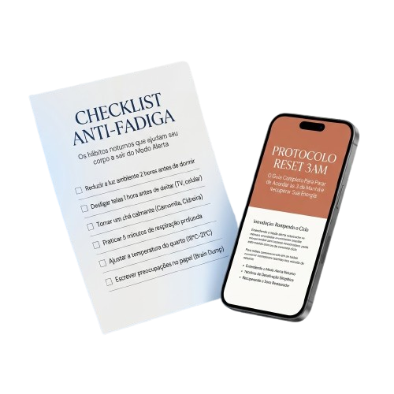
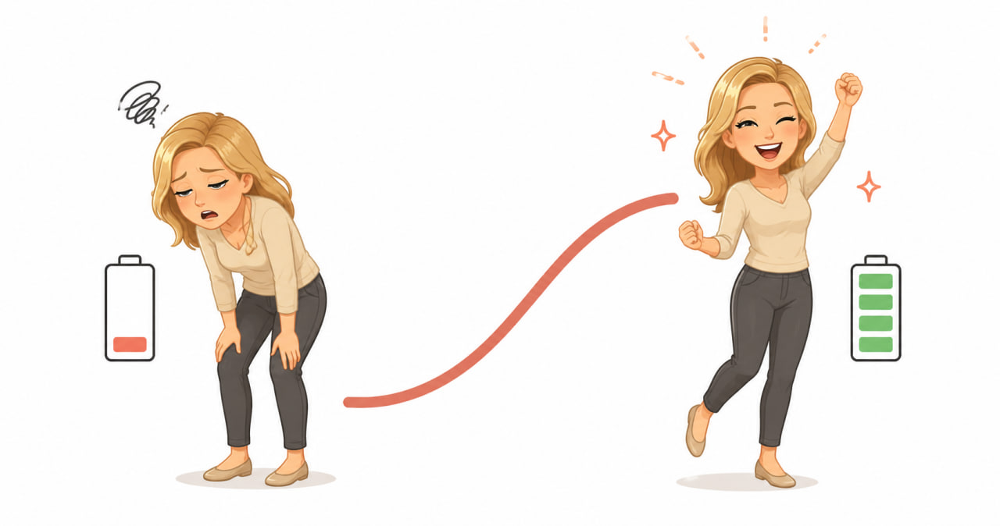

Experimente o Código da Energia Matinal: finalmente diga adeus ao acordar destruído, mente lenta, cansaço às 10h e à dependência de café que nunca resolve de verdade. Volte a acordar disposto como uma pessoa normal novamente.
QUERO TESTAR O CÓDIGO DA ENERGIA AGORA →Mais de 43.000 acessos liberados
Por que tantas pessoas continuam cansadas… mesmo dormindo por horas?
É por isso que tantas pessoas começam a perceber:
Diferente de um simples dia pesado, o "Acordar Destruído" geralmente é causado por uma sabotagem silenciosa acontecendo dentro do seu corpo durante a madrugada:
Quando o cortisol dispara antes das 5h, você sai do sono profundo cedo demais. Quando ele segue a janela natural — entre 6h e 8h — o despertar acontece com energia em vez de exaustão. O Código atua exatamente nessa janela.
Esse hormônio deveria estar baixo de madrugada e subir gradualmente antes do despertar... mas em muitas pessoas ele dispara horas antes do alarme. Resultado? Seu corpo sai do sono profundo cedo demais, entra em "Modo Alerta" e você acorda destruído, mesmo tendo dormido o tempo certo.
O excesso de cortisol noturno impede o corpo de completar as fases mais restauradoras do sono. Você até dorme várias horas... mas seu organismo passa a noite em modo de sobrevivência em vez de modo de recuperação.
Mesmo quando você consegue dormir, o cortisol desequilibrado provoca uma queda abrupta de energia nas primeiras horas do dia. É por isso que o café funciona por 40 minutos e o cansaço volta: o problema nunca foi o café.
Muitas pessoas funcionam por meses nesse estado sem perceber que estão se recuperando apenas parcialmente toda noite. O cansaço vai se acumulando, e o que antes era um dia ruim vira o padrão permanente.
Quando isso continua por muito tempo, o organismo aprende a acordar cansado. A sensação de destruição matinal deixa de ser exceção e passa a ser o que seu corpo espera todo dia ao abrir os olhos.
Os métodos tradicionais para ter mais energia normalmente não tratam esses mecanismos profundos.
Eles funcionam como um "empurrão temporário"… mas não ajudam o corpo a corrigir o desequilíbrio real que está acontecendo durante a noite.
O Código da Energia Matinal foi criado justamente para agir nesses mecanismos noturnos profundos que os métodos tradicionais ignoram.
Enquanto a maioria das soluções tenta apenas "estimular" você temporariamente, o Código da Energia trabalha para ajudar seu corpo a regular o cortisol no horário certo e entrar naturalmente em modo de recuperação real.
Eles são como tomar mais café sem entender por que o café parou de funcionar — fazendo você acordar cansado, frustrado e preso em um ciclo de manhãs destruídas que não representa a pessoa leve, disposta e energética que você realmente é.
O seu corpo não está quebrado.
Ele só perdeu o horário.
E existe um protocolo de 14 dias para corrigi-lo
Enquanto algumas pessoas parecem acordar cheias de energia naturalmente… você talvez esteja cansado de viver preso no ciclo do "Acordar Destruído". De abrir os olhos já exausto. De depender de café para funcionar. De sentir sua energia e sua clareza mental se deteriorando manhã após manhã.
Mas agora é possível quebrar esse ciclo e voltar a acordar disposto com o Código da Energia Matinal.
"Parece que meu corpo finalmente aprendeu a se recuperar de noite."
"Depois de poucos dias, parei de acordar destruído e comecei a chegar ao almoço com a mesma energia que tinha às 8h." — M.T.
O Código da Energia Matinal foi criado para ajudar seu corpo a regular o cortisol no horário certo e restaurar naturalmente a energia matinal que deveria ser sua por padrão.
É um método desenvolvido para atuar diretamente nos mecanismos mais comuns por trás:
Telas reais. Sem promessas vazias.
Abre em segundos. Sete minutos. Uma sequência que regula seu cortisol.
Tudo que importa, nada de enchimento.
Template duplicável. Você vê o dia exato que a energia mudou.
Não aceite continuar preso em um ciclo de manhãs destruídas e dias sem energia.
O Código da Energia Matinal pode ser o passo que faltava para recuperar o despertar, a disposição e a qualidade de vida que seu corpo deveria ter naturalmente.
A hora de mudar é agora.
Sem aquela sensação de ser arrancado do sono. Com vontade de levantar antes do celular tocar.
O café vira opcional. Não uma muleta sem a qual o dia não começa.
O cérebro que funcionava antes. Sem a névoa das primeiras horas que arrasta o dia inteiro.
Pela primeira vez, uma explicação que faz sentido, mesmo quando o exame volta normal.
Sem a queda das 10h. Sem o desejo de fechar os olhos na cadeira antes do meio-dia.
A pessoa que você era antes do cansaço matinal virar rotina. Ela ainda está lá.
Em menos de 2 minutos você já tem o checklist no celular e o guia no seu email.
Ver planos →Sem a muleta do café. Sem esperar 30 minutos para o cérebro ligar depois de levantar.
Dormiu mais cedo, tomou vitamina, mudou a dieta, e o cansaço matinal continuou. Aqui você vai entender o porquê.
Sem a queda das 10h. Sem o sonho de deitar 5 minutos depois do almoço.
Sem pré-treino, sem termogênico, sem o ciclo de depender de algo externo para funcionar.
Não mais improvisar de manhã. Sete minutos de sequência que você segue no piloto automático.
A pessoa com energia, foco e bom humor que existia antes do cansaço matinal se instalar.
Checklist Anti-Fadiga + Guia completo em PDF (22 páginas)
↓ Veja o Plano Completo antes de decidir
Qualquer plano tem 14 dias de garantia. Não funcionou — devolvo 100% do valor, sem perguntas.
Imediatamente após a confirmação do pagamento, você recebe um email com os links para o Checklist Anti-Fadiga, o Guia PDF e o template do Planner no Notion. Em menos de 2 minutos está tudo no seu celular — pronto para aplicar na manhã seguinte.
Sim. O pagamento é processado por plataforma certificada com criptografia SSL. Você pode pagar via Pix ou cartão de crédito. Seus dados nunca passam pelos nossos servidores.
Sim. 14 dias de garantia total. Se você seguir o protocolo e não ver nenhuma melhora — manda um email e devolvemos 100% do valor, sem questionar. O risco é todo nosso.
Não. O Código não pede que você corte o café — ele mostra o horário certo de tomar para que ele potencialize sua energia em vez de criar dependência. A maioria das pessoas reduz naturalmente o consumo nas primeiras semanas porque simplesmente não sente mais necessidade.
É exatamente para quem tentou. Dormir mais cedo, vitaminas, apps de sono — nenhuma dessas soluções atua no cortisol matinal, que é a raiz do problema. O Código da Energia age onde as outras soluções não chegam.
Muitas pessoas relatam a primeira melhora entre o dia 4 e o dia 7. O protocolo completo de 14 dias é o período de estabilização do cortisol. Resultados variam — e por isso a garantia existe.
Mais de 29.000 Pessoas Abandonaram o "Modo Zumbi Matinal" Graças ao Código da Energia
Descubra como eles pararam de depender de café, eliminaram o cansaço das 10h e voltaram a acordar dispostos — sem estimulantes, sem suplementos caros, sem força de vontade.
